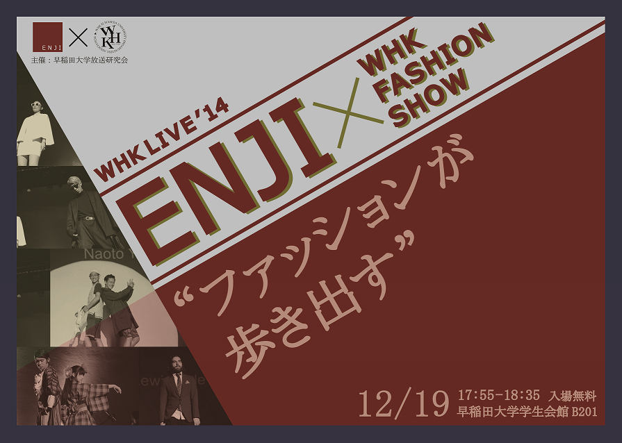
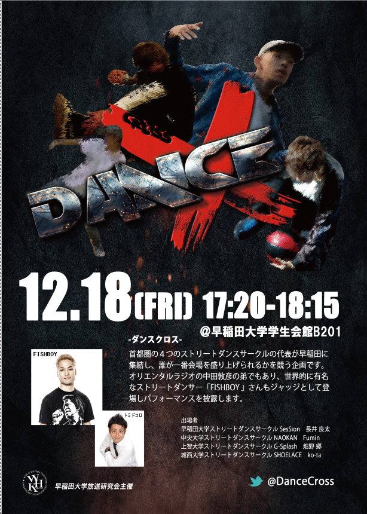
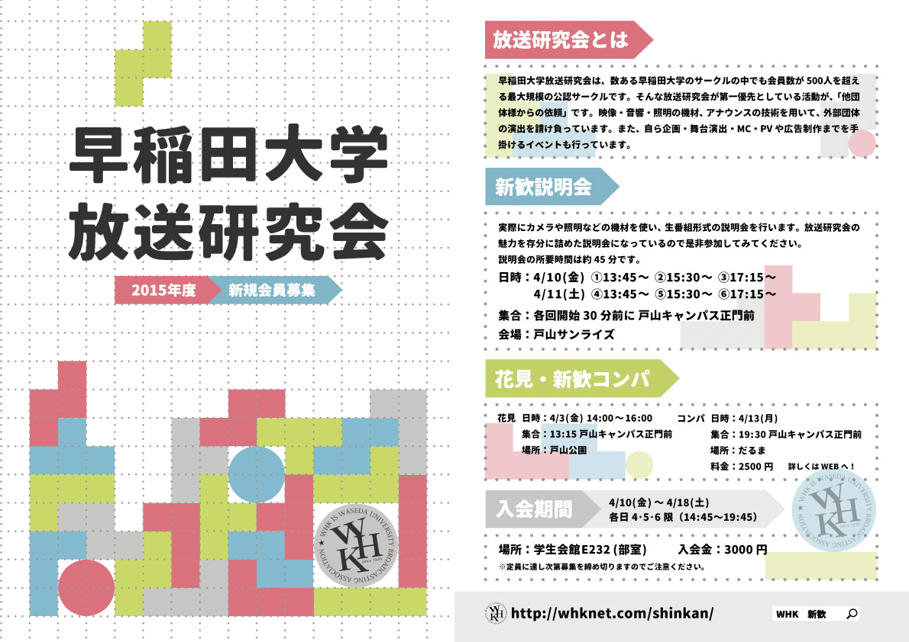
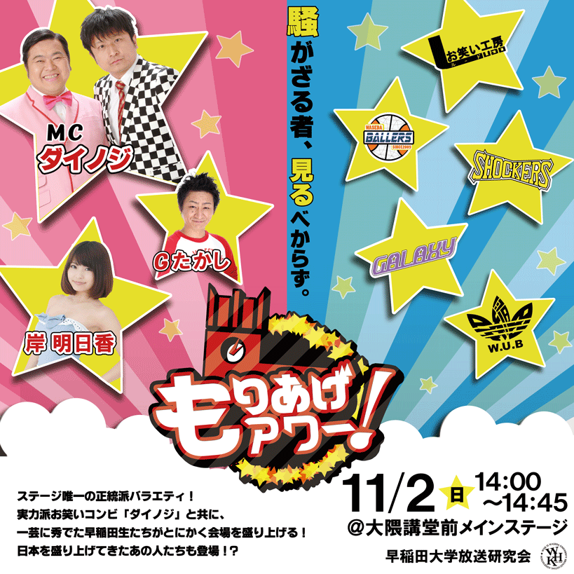

毎年12月に早稲田大学で開催される”大学生M-1グランプリ”の公式ホームページを作りました。以前まで公式サイトがなく、広報活動はTwitterのみであったため、情報を蓄積することができていませんでした。そこで私は、WEBサイトを作成したらどうかと提案をし、公式サイトの立ち上げに関わり、WEB制作と運営に関わりました。そして、イベントのブランド力や認知度も高まり、”お笑いナタリー”さんに取り上げて頂きました。(記事はこちら) その結果、早稲田大学以外の学生からの応募の割合が増え、計167組の応募をしていただきました。
公式サイトは翌年以降も引き続き継続していく予定です。

"ENJI"という早稲田大学のファッションフリーペーパーサークルが企画した「ENJI×WHK FASHION SHOW」のフライヤーを作成しました。普段はフリーペーパーという媒体で活動するENJIが、今回はファッションショーでモデルの方たちがランウェイを歩くということで、私は「ファッションが歩き出す」というキャッチコピーをENJIに提案しました。フライヤーのカラーは臙脂色を使い、ひと目でENJIのフライヤーだとわかるようにしました。

放送研究会主催の「DanceX-ダンスクロス-」という大学生ダンスバトル企画のフライヤーの作成をしました。４つの大学から選ばれた学生ダンサー４名を載せ、ダンスの躍動感を表現しました。

当会の2015年度の新入生募集期間(2015/4〜5)のテーマデザインを決め、また大学で２０００枚配布するフライヤーを作成しました。当会は５つの技術部（映像・音響・照明・アナウンス・制作）があり、どの技術部に所属をしても自分の居場所が見つかる、やりがいを見つけられるという思いをテトリスで表現することになりました。
このテーマデザインはフライヤー以外のWEBサイトやその他の静止画にも統一して使用されました。

早稲田祭のステージで開催された「もりあげアワー！」というバラエティ企画の看板を作成しました。「早稲田の学生」VS「ダイノジ率いる芸能人軍団」という対決をイメージして２つのカラーを用いるデザインにしました。
早稲田大学チアダンスチームMYNXのパフォーマンス前に上映されるオープニング動画です。彼女たちの練習の様子をビデオカメラで撮影しに行き、動画に組み込みました。明るい笑顔の彼女たちをポップなカラーで表現しました。
上へ戻る